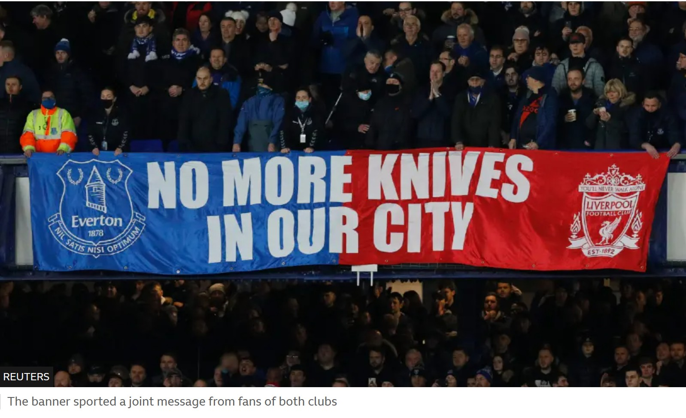
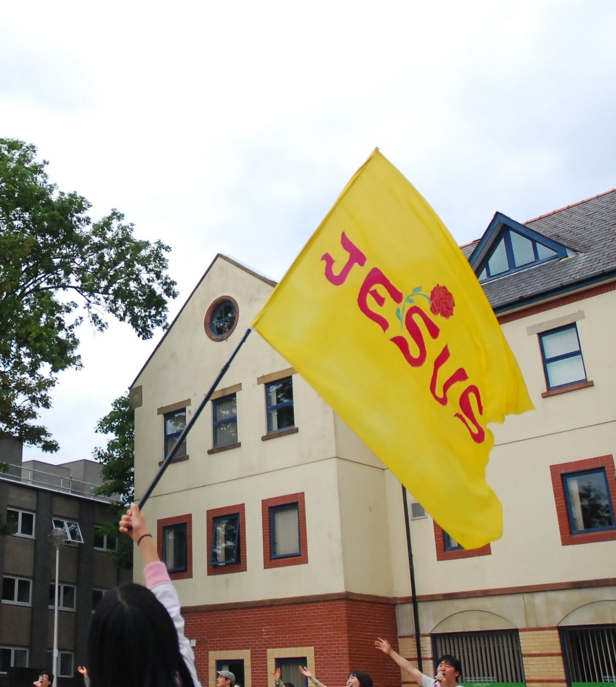

사랑하는 동역자님께 주님의 평안을 전합니다.
Message
대체될 수 없는 존재
하루가 다르게 세상이 바뀐다. Meta는 8천명의 직원들을 해고하며, 남은 이들의 마우스와 키보드 움직임을 기록해 그들을 대신할 AI 시스템을 훈련시키고 있고, Uber는 모든 운전자의 차량에 센서를 달아 자율주행 데이터를 확보하고 있다. 전장에서도 즉각적이고 정확한 대응을 위해 AI에 결정권을 넘겨야 한다는 현실이며, 다른 영역들도 예외가 없어 보인다. 그래서 사람들은 이렇게 묻기 시작했다.
나의 쓸모는 언제까지일까? 이 경쟁에서 살아남을 수 있을까? 이제 어떻게 살아가야 할까?
그런데 성경은 이 질문들 자체가 틀렸음을 가르친다. "내가 너를 지명하여 불렀나니 너는 내 것이라"(사 43:1) 하심으로 나의 존재가 처음부터 하나님의 것이고, "네가 내 눈에 보배롭고 존귀하며 내가 너를 사랑하였다"(사 43:4) 는 말씨으로 나의 가치를 명확히 정의해주셨다. 창조의 목적 또한 "이 백성은 내가 나를 위하여 지었나니 나의 찬송을 부르게 하려 함이니라"(사 43:21) 는 말쓰처럼, 나를 부르시고 끝까지 사랑하시는 주님을 온 삶으로 예배하는 것이다.
시대가 변해도 달라지는 것은 없다.
"여호와를 경외하는 것이 지혜의 근본"(잠 9:10) 이라 하셨으니, 빅데이터와 첨단의 비서를 손에 쾼어도 참된 지혜는 창조하시고 다스리시는 하나님을 경외하는 것이다. 그리고 마음과 뜻과 정성을 다하여 하나님을 예배하고, 말쓰을 붙들어 기도하고, 이웃을 내 몸처럼 사랑하고, 그리스도의 몸을 함께 세우며, 열방을 향해 생명을 전하는 과업을 멈추지 않을 것이다. 이것은 AI 에이전트가 수행할 수 있는 기능 목록이 아니라 "하나님의 영으로 인도함을 받는"(롬 8:14) 자들만이 살아낼 수 있는 영화로운 삶이다.
정복하고 다스려야 한다.
AI로 대변되는 지금의 시즌은 이전과 달라 보이지만, 태초부터 취소된 적 없는 "땅을 정복하라, 다스리라"(창 1:28) 는 말쓰은 충성스러운 청지기로의 부르심을 오늘도 명령하고 있다. 전문가들은 성과와 생존을 위해 모든 것을 AI에 위탁하라 조언하지만, 이는 탐심에 기인하여 믿음에서 떠나게 하는 "우상숭배"(골 3:5)가 될 수 있음을 주의하자. 바벨론의 학문과 기술의 중심에서도 하나님께서 "지식과 모든 학문을 주셨"(단 1:17)던 다니엘은 탁월하고 성결하게 자신의 역할을 감당할 수 있었다.
인류를 위한, 의 이유에서가 아니라 여기서 밀리면 끝렬다는 긴박감으로 기술을 개발하고 데이터 센터를 세워가는 무한경쟁의 시대이기에, 주님 앞에 더 깊이 머물며 말써에 귀를 기울이고, 오늘을 살아갈 지혜와 동행하심을 구해야 한다. 믿음으로만 치러낼 수 있고 마당히 치러내야 할 그 싸움을 감당하려면 말이다. "세상 끝날까지 너희와 항상 함께 있으리라"(마 28:20) 약속하셨고, "나의 사랑, 나의 어여쀜 자야 일어나서 함께 가자"(아 2:13) 초대하신 주님이 우리의 모든 걸음에 즐거이 동행하실 것이다.
누구와도, 무엇에도, 단 한 순간도 대체될 수 없는
주님의 신부들을 축복하며.
영국소식
내려놓은 칼들
잉글랜드·웨일스
증가율
들어온 칼
수거 총량
잉글랜드와 웨일스에서 한 해 동안 발생한 칼부림 범죄는 49,151건으로 10년 전과 비교해 81% 증가했고, 런던에서는 지금도 40분에 한 번 칼날이 누군가를 향합니다. 2024~2025년, 칼에 목숨을 잃은 205명 중 52명은 25세 이하였습니다.
아버지의 빈자리를 갱단이 차지하여, 거리가 그들의 유일한 가정이 된 청년들은 "먼저 찌르지 않으면 내가 찔린다"는 공포 속에 칼을 쥐었고, 정부는 10년 계획을 선언하며 경찰의 모든 수단을 동원했습니다. 그런데, 국가 권력이 거둔 칼은 전체 수거량의 단 2%였고, 98%는 교회 앞 상자 안으로 들어왔습니다.

Word 4 Weapons(말씀으로 무기를)는 런던 교회들이 연합해 세운 칼 수거함 네트워크인데, 법원도, 경찰서도 아닌 교회 앞 수거함에 절차도, 신원 확인도, 질문도 없이 그저 내려놓으면 됩니다.
지난해 8월까지 런던 전역 51개 수거함을 통해 63,000개가 넘는 칼이 수거되었고, The Message Trust는 런던의 학교들을 순회하며 "No More Knives" 캠페인을 통해 학생들의 칼을 수거하고 대신 성경을 나눠주었습니다.
칼부림 관련 뉴스가 여전히 런던의 일상처럼 여겨지지만, 품에 간직해온 그것을 더 많은 이들이 내려놓고 있고, 대신 그 손에 말씀이 쥐어지고 있습니다. 주께서 이들의 아비가 되어주시기에 이들의 가정 또한 아름답게 회복될 것입니다.
이 땅의 젊은이들을 위해 마음을 모아 기도해주셔서 감사드립니다.
연합 예배 / 집회
아래는 함께 연합하고 준비하며 섬기는 예배/집회입니다.

June 18 – 20
런던 이스라엘 컨퍼런스
강사: 김종철 감독 (Brad TV)
장소: 말씀과 기도의 집 (김호근 목사)
June 30 – July 3
72 Hours Worship & Prayer
장소: 독일 헤른후트 · Komensky Conference House
July 29 – Aug 4
Celebration for the Nations | 열방부흥축제
장소: 영국 웨일즈 · Selwyn Samuel Centre
자세한 정보는 공식 홍보영상을 확인하세요.
기도 제목
United Kingdom
영국에는 300개 이상의 언어를 사용하는 124개 종족 그룹이 함께 살아가는데, 그중 42개가 미전도종족, 18개는 복음화율 0.1% 미만의 최전방종족으로 분류됩니다(Joshua Project 통계). 다시말해, 지금은 과거와는 달리 다민족 사회로 빠르게 전환되고 있기에, 이 땅에서 일어날 부흥의 영향력은 직접적으로 땅끝의 회복으로 이어지게 될 것입니다.
House of Prayer London
이 땅의 악함을 품고 기도합니다. 속히 주께로 돌아서기를 기도합니다. 다시 깨어 일어나 전심으로 주님의 얼굴을 구하도록 교회들을 품고 예배하며 나아갑니다.
믿음의 섬김과 동역, 그리고 사랑에 깊이 감사드립니다.
이훈종, 김선영 선교사 드림
런던 기도의 집
230 Lillie Road, Fulham, London, SW6 7QA
월 – 금 | 20:00 – 23:00
기도와 후원을 통해 런던 기도의 집을 함께 지키며 세워가실 수 있습니다.
후원 계좌